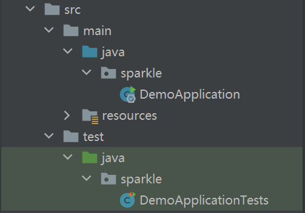

# Spring 搭建过程
# 使用Intellij IDEA创建项目
Intellij IDEA版本: 2020.2.3
当然也可以使用其他的IDEA Eclipse、Spring Tool Suite、NetBeans等
打开Intellij idea 点击"New Project" 创建一个新的项目
初始化Spring应用有许多方式,我们采用最简洁的Spring Initializr
Project SDK: 初始化Spring项目使用的sdk版本，我这里使用的是
1.8的版本Choose starter service URL: 选择我们构建Spring的路径,也就是下载Spring依赖库，这里不使用默认的路径，因为是在国外服务器下载速度超级慢，可以使用阿里云的启动器 https://start.aliyun.com/
输入初始化项目的一些配置信息
Group&Artifact：group和artifact是maven管理项目包时用作区分的字段，就像是地图上的坐标,为了以后可以让别人从Manven 仓库能引用到你的项目.group分为几个字段，例如com.example，前面的com叫【域】，后面的是你自己起的域名。`artifactId：artifactId一般是项目名或者模块名。
Type:构建类型 通过
Manven或者Gradle关于 这两个知道是管理项目结构的就行，后续介绍Language:一般选java其余Kotlin主要是android开发 Groovy是做Java虚拟机
Packaging:打包的方式 jar普通的依赖独立包 war包是Web网站打包可以包含一些静态资源等
暂时先用不到可以随便选，到工程打包可以修改打包方式
Java Version:与前面选择的sdk版本保持一致即可
Version:项目版本，用默认的 以后如果更新迭代我们需要配置版本
Name:项目名称
Description:项目描述
Package: 初始化项目所在的包路径
配置项目的一些依赖

如果你已经知道项目需要使用的一些组件,那么请在这里配置他。当然也可以什么都不选直接“Next”，到后面使用的时候再配置。
Spring boot 版本: 我们使用默认的
2.3.7 RELEASE开发用具：Loombok 简化实体类创建(实际开发不建议使用,虽说方便但是破坏了属性的封闭性还有其他一些隐藏的坑,如果确实需要可以使用) DevTools 这里主要是用来热部署,也就是配置完可以自动刷新应用我们修改的代码而不用启动服务器。
web:
Thymeleaf:模板引擎渲染，主要是界面渲染完成前后端分离 可以选择其他的 以前最古老的是使用jsp作为页面渲染，但是jsp在这方面不太有优势目前逐渐被抛弃。了解前端的可以更容易理解点，类似目前比较流行的
VueAngularJS,VUE,react等前端框架。当然里面设计很多渲染界面使用的语法，如果想要深入需要大量时间研究，这里只是简单的使用。配置完可以在右侧看到我们选择的模块列表。确认无误后点击“Next”完成配置。
完成配置
完成创建之后进来就是这个页面，上图是项目左侧目录树。
# 目录分析
- .idea: 这个是idea自己生成的目录
- .mvn: maven生成 主要放的是依赖包
- src(重要): 主要目录 存放我们的程序的主要路径
- mvnm&mvnw.cmd:这两个文件主要是存储Maven构建的命令,可以运行构建
- pom.xml(重要)：主要放置的是项目所有的依赖配置，下面会具体说
- External Libraries:一些外部模块的jar 、运行的sdk等依赖
- 其他：可暂时先不用了解不是很重要
下面主要说下src文件夹、和pom.xml文件
# src目录
展开src如下图：

.src
├─ main //主程序目录
│ ├─ java //放置所有的java文件 可以看到文件目录是蓝色的表示只能放.java
| | └─sparkle //创建项目步骤三中的Package配置
| | └─DemoApplication.java //主程序启动入口文件(重要)
| └─resources //放置静态资源文件 图片、脚本、页面样式、还有页面html等
| └─applicationo.properties //配置文件
└─ test //测试程序目录
└─ java
└─sparkle
└─ DemoApplicationTests.java //测试主程序测试类
2
3
4
5
6
7
8
9
10
11
打开DemoApplication.java文件
package sparkle;
import org.springframework.boot.SpringApplication;
import org.springframework.boot.autoconfigure.SpringBootApplication;
@SpringBootApplication
public class DemoApplication {
public static void main(String[] args) { //主函数
SpringApplication.run(DemoApplication.class, args); //启动运行
}
}
2
3
4
5
6
7
8
9
10
11
12
13
看起来很简洁，基本没什么代码，就这样程序基本上就跑起来了，越是简单的代码其背后的运行机制越是复杂，可想而知，SpringBoot为我们省去了很大一部分工作。
其中有个注解很重要@SpringBootApplication（注解这里先不解释,简单理解就是一个标签,给底层代码识别用的）
@SpringBootApplication 等同于三个子注解
@SpringBootConfiguration : 声明配置 是@Configuration特殊形式
@AutoEnabledConfiguration: 启用Spring Boot 自动配置 一些基础组件
@ComponentSacn: 启用组件扫描 之后所有定义为@Component、@Controller、@Service 等标识的注解类都会作为组件自动注入容器中
application.properties文件内容
# 应用名称
spring.application.name=demo
# THYMELEAF (ThymeleafAutoConfiguration)
# 开启模板缓存（默认值： true ）
spring.thymeleaf.cache=true //使用Devtools热部署需要把这个值改为false
# 检查模板是否存在，然后再呈现
spring.thymeleaf.check-template=true
# 检查模板位置是否正确（默认值 :true ）
spring.thymeleaf.check-template-location=true
#Content-Type 的值（默认值： text/html ）
spring.thymeleaf.content-type=text/html
# 开启 MVC Thymeleaf 视图解析（默认值： true ）
spring.thymeleaf.enabled=true
# 模板编码
spring.thymeleaf.encoding=UTF-8
# 要被排除在解析之外的视图名称列表，⽤逗号分隔
spring.thymeleaf.excluded-view-names=
# 要运⽤于模板之上的模板模式。另⻅ StandardTemplate-ModeHandlers( 默认值： HTML5)
spring.thymeleaf.mode=HTML5
# 在构建 URL 时添加到视图名称前的前缀（默认值： classpath:/templates/ ）
spring.thymeleaf.prefix=classpath:/templates/
# 在构建 URL 时添加到视图名称后的后缀（默认值： .html ）
spring.thymeleaf.suffix=.html
2
3
4
5
6
7
8
9
10
11
12
13
14
15
16
17
18
19
20
21
22
23
DemoApplicationTests.java文件内容
package sparkle;
import org.junit.jupiter.api.Test;
import org.springframework.boot.test.context.SpringBootTest;
@SpringBootTest //测试注解标识这是一个测试类
class DemoApplicationTests {
@Test //用于标注此方法是测试方法
void contextLoads() {
}
}
2
3
4
5
6
7
8
9
10
11
12
13
关于测试类的使用方式这里先不过多叙述，等之后使用再做介绍
# Pom.xml
<?xml version="1.0" encoding="UTF-8"?>
<project xmlns="http://maven.apache.org/POM/4.0.0" xmlns:xsi="http://www.w3.org/2001/XMLSchema-instance"
xsi:schemaLocation="http://maven.apache.org/POM/4.0.0 https://maven.apache.org/xsd/maven-4.0.0.xsd">
<modelVersion>4.0.0</modelVersion>
<groupId>sparkle</groupId>
<artifactId>demo</artifactId>
<version>0.0.1-SNAPSHOT</version>
<name>demo</name>
<description>Demo project for Spring Boot</description>
<properties>
<java.version>1.8</java.version>
<project.build.sourceEncoding>UTF-8</project.build.sourceEncoding>
<project.reporting.outputEncoding>UTF-8</project.reporting.outputEncoding>
<spring-boot.version>2.3.7.RELEASE</spring-boot.version>
</properties>
<dependencies>
<dependency>
<groupId>org.springframework.boot</groupId>
<artifactId>spring-boot-starter-thymeleaf</artifactId>
</dependency>
<dependency>
<groupId>org.springframework.boot</groupId>
<artifactId>spring-boot-devtools</artifactId>
<scope>runtime</scope>
<optional>true</optional>
</dependency>
<dependency>
<groupId>org.projectlombok</groupId>
<artifactId>lombok</artifactId>
<optional>true</optional>
</dependency>
<dependency>
<groupId>org.springframework.boot</groupId>
<artifactId>spring-boot-starter-test</artifactId>
<scope>test</scope>
<exclusions>
<exclusion>
<groupId>org.junit.vintage</groupId>
<artifactId>junit-vintage-engine</artifactId>
</exclusion>
</exclusions>
</dependency>
</dependencies>
<dependencyManagement>
<dependencies>
<dependency>
<groupId>org.springframework.boot</groupId>
<artifactId>spring-boot-dependencies</artifactId>
<version>${spring-boot.version}</version>
<type>pom</type>
<scope>import</scope>
</dependency>
</dependencies>
</dependencyManagement>
<build>
<plugins>
<plugin>
<groupId>org.apache.maven.plugins</groupId>
<artifactId>maven-compiler-plugin</artifactId>
<version>3.8.1</version>
<configuration>
<source>1.8</source>
<target>1.8</target>
<encoding>UTF-8</encoding>
</configuration>
</plugin>
<plugin>
<groupId>org.springframework.boot</groupId>
<artifactId>spring-boot-maven-plugin</artifactId>
<version>2.3.7.RELEASE</version>
<configuration>
<mainClass>sparkle.DemoApplication</mainClass>
</configuration>
<executions>
<execution>
<id>repackage</id>
<goals>
<goal>repackage</goal>
</goals>
</execution>
</executions>
</plugin>
</plugins>
</build>
</project>
2
3
4
5
6
7
8
9
10
11
12
13
14
15
16
17
18
19
20
21
22
23
24
25
26
27
28
29
30
31
32
33
34
35
36
37
38
39
40
41
42
43
44
45
46
47
48
49
50
51
52
53
54
55
56
57
58
59
60
61
62
63
64
65
66
67
68
69
70
71
72
73
74
75
76
77
78
79
80
81
82
83
84
85
86
87
88
89
90
91
92
如果你对Maven有一定了解请直接跳过以下内容，接下来大概说下每个内容是什么
maven配置
<modelVersion>4.0.0</modelVersion> //maven版本
<groupId>sparkle</groupId> //配置中提到的
<artifactId>demo</artifactId>
<version>0.0.1-SNAPSHOT</version> //当前版本
<name>demo</name>
<description>Demo project for Spring Boot</description>
2
3
4
5
6
sdk配置
<properties>
<java.version>1.8</java.version> //sdk版本
<project.build.sourceEncoding>UTF-8</project.build.sourceEncoding> //构建编码
<project.reporting.outputEncoding>UTF-8</project.reporting.outputEncoding>
<spring-boot.version>2.3.7.RELEASE</spring-boot.version> //springboot版本
</properties>
2
3
4
5
6
dependies配置，以下只拿一个作为简单介绍
<dependency>
<groupId>org.springframework.boot</groupId>
<artifactId>spring-boot-starter-test</artifactId> //引用的测试组件
<scope>test</scope>
<exclusions>
<exclusion>
<groupId>org.junit.vintage</groupId>
<artifactId>junit-vintage-engine</artifactId>
</exclusion>
</exclusions>
</dependency>
2
3
4
5
6
7
8
9
10
11
一般我们要引入某个组件直接在pom.xml中配置
到此为止以上就是从创建到基本目录及基础文件的介绍,感谢大家的阅览，有不正确的地方欢迎评论里指正~~